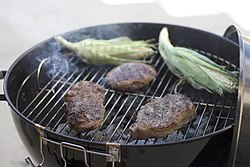
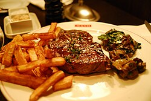
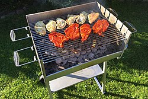
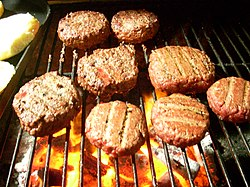

Fire, smoke, heat, and time — the oldest cooking method known to humanity, still undefeated.
Weber's round kettle design, introduced in 1952, remains the gold standard. Lump charcoal or briquettes burn at 500–700°F. The vents control airflow and temperature precisely. Nothing matches charcoal's flavor depth.
Turn a knob, hit ignite — full heat in 10 minutes. Gas grills use stainless burners beneath metal flavorizer bars or lava rocks. Multiple burners enable two-zone cooking. Favored by weeknight grillers and most American backyards.
Wood pellets — compressed hardwood sawdust — feed an auger into a firepot. A fan circulates heat and smoke. A digital controller holds temperature to within 5°F. Pellet grills blur the line between grilling and smoking.
Egg-shaped ceramic cookers descended from Japanese mushikamado clay pots. Ceramic walls retain heat with extraordinary efficiency. Can run at 225°F for 18+ hours on a single load of charcoal, or hit 750°F for pizza and searing.
Two-chamber design: fire burns in a side firebox, smoke travels through a damper into the main cooking chamber. Requires constant attention — adding splits of wood every 45–60 min, managing airflow with intake and exhaust dampers.
A flat steel cooking surface heated by gas burners. Creates the Maillard reaction across the entire contact surface — no grate lines, maximum browning. The tool behind smash burgers, hibachi, diner breakfasts.
| Fuel | Max Temp | Flavor | Ease | Cost |
|---|---|---|---|---|
| Lump Charcoal | 700°F+ | ⭐⭐⭐⭐⭐ | ⭐⭐⭐ | $$ |
| Charcoal Briquettes | 600°F | ⭐⭐⭐⭐ | ⭐⭐⭐ | $ |
| Propane | 650°F | ⭐⭐ | ⭐⭐⭐⭐⭐ | $$ |
| Natural Gas | 650°F | ⭐⭐ | ⭐⭐⭐⭐⭐ | $$ |
| Hardwood Pellets | 500°F | ⭐⭐⭐⭐ | ⭐⭐⭐⭐⭐ | $$$ |
| Wood Splits | 900°F+ | ⭐⭐⭐⭐⭐ | ⭐ | $ |
Food sits directly over the heat source. Ideal for thin cuts — steaks, burgers, chops, shrimp, vegetables — that cook in under 20 minutes. The Maillard reaction at 300°F+ creates the crust. Don't walk away.
Heat source on one side, food on the other. Hot air circulates like a convection oven. Allows large cuts to cook through without burning the exterior. The foundation of roasting and low-&-slow BBQ.
Cook the steak low and slow (225–250°F) until it reaches ~10°F below target internal temp. Rest it, then blast it over high heat for 60–90 seconds per side. Produces edge-to-edge perfect doneness with a superior crust vs. traditional sear.
Smoke at below 90°F — no cooking, pure flavor absorption. Used for salmon lox, cheese, salt, and charcuterie. Requires a smoke generator separate from any heat source. Extremely common in Scandinavian and Pacific Northwest cuisine.
A motor-driven spit rotates the food continuously. Gravity constantly bastes the meat in its own juices. Produces extraordinarily juicy results with a golden, rendered exterior. The cooking method for Peruvian chicken, Greek lamb, and European spit-roasts.
Salt draws moisture out of the meat, which dissolves the salt, then is reabsorbed — carrying salt deep into the protein. 45 minutes minimum, 24–72 hours optimal. Creates superior seasoning and a better crust because the surface is drier. No soggy exterior.
Always set up your charcoal on one half of the grill only. This gives you two zones: a hot side for searing and a cool side for indirect cooking (or holding food).
| Cut | Rare | Medium-Rare | Medium | Well Done | USDA Safe |
|---|---|---|---|---|---|
| Beef Steak | 125°F | 130–135°F | 140–145°F | 160°F+ | 145°F |
| Beef Burger | — | — | 155–160°F | 165°F | 160°F |
| Brisket / Ribs | Low & slow to probe tender — typically 195–205°F | — | 145°F | ||
| Pork Chop / Loin | — | 140°F | 145°F | 160°F | 145°F |
| Pork Shoulder / Butt | Pull at 195–205°F for pulled pork | 145°F | |||
| Chicken Breast | — | — | — | 165°F | 165°F |
| Chicken Thigh | — | — | — | 175–180°F | 165°F |
| Whole Turkey | — | — | — | 165°F (breast) · 175°F (thigh) | 165°F |
| Lamb Chop | 125°F | 130–135°F | 145°F | 160°F | 145°F |
| Fish (salmon, tuna) | 120–125°F | 130°F | 145°F | — | 145°F |
| Shrimp | Pink and opaque, 120°F — do not overcook | 145°F | |||
| Sausage | — | — | — | 160°F (pork) · 165°F (chicken) | 160°F |
| Zone | Grill Temp | Hand Test* | Use For |
|---|---|---|---|
| Screaming Hot | 600°F+ | 1–2 sec | Searing, marks, crust formation |
| High | 450–550°F | 2–3 sec | Steaks, burgers, most direct-heat grilling |
| Medium-High | 375–450°F | 4–5 sec | Chicken pieces, chops, sausage |
| Medium | 325–375°F | 5–6 sec | Fish, veggies, rotisserie |
| Low | 225–325°F | 8–10 sec | Indirect cooking, smoking, holding |
* Hold your hand 5" above the grate — how many seconds before you pull it away.
Reads in 2–3 seconds. Essential for steaks, burgers, chicken. The Thermapen ONE by ThermoWorks is the gold standard — worth every dollar.
Stays in the meat while it cooks. Connects wirelessly to your phone. Game-changing for long cooks — monitor a 12-hour brisket from your couch. ThermoWorks Signals, MEATER+.
Built into the lid — notoriously inaccurate. They read hood temp, not grate-level temp. Use a probe thermometer at grate level instead for the real story.
Beef is king. Central Texas style (pioneered by Lockhart and Austin) focuses on brisket cooked over post oak with minimal seasoning — salt and pepper only, often called a "dalmatian rub." The meat speaks for itself. Aaron Franklin of Franklin Barbecue set the modern standard.
East Texas favors pork and sweeter sauces influenced by Southern tradition. South Texas borrows from Mexican barbacoa culture — slow-cooked beef cheeks and cabrito (goat).
KC BBQ is known for thick, sweet, tomato-based sauce and cooking everything — beef, pork, chicken, lamb, and more. The city's BBQ heritage traces to Henry Perry, who sold smoked meats from a street stand in 1908.
Burnt ends — the caramelized, cubed tips of smoked brisket point — originated in Kansas City and are arguably the most coveted BBQ item in America. Arthur Bryant's and Joe's KC are institutions.
Memphis lives and dies by pork ribs — specifically dry-rubbed ribs with a spiced rub, cooked low and slow, with sauce on the side (or not at all). "Wet" ribs are sauced and grilled again; "dry" ribs get a final dusting of rub after cooking.
The World Championship Barbecue Cooking Contest held annually at Memphis in May is the largest pork BBQ competition in the world. The Rendezvous restaurant has been a pillar since 1948.
The Carolinas split into two camps. Eastern North Carolina uses a thin, vinegar-pepper sauce (no tomato) on whole-hog BBQ — every part of the pig. Western NC (Lexington style) adds a touch of ketchup, making a "red slaw." South Carolina is famous for its mustard-based "Carolina Gold" sauce.
Whole-hog cooking is the oldest BBQ tradition in America, tracing to colonial times. Pitmasters cook overnight for 12–24 hours. Ed Mitchell and Rodney Scott are modern legends of the whole-hog tradition.
North Alabama is famous for white BBQ sauce — a tangy, mayonnaise-based sauce invented by Big Bob Gibson in Decatur in 1925. It's used as both a marinade and a finishing sauce, particularly on smoked chicken. The interplay of mayo, apple cider vinegar, and horseradish creates a unique flavor profile found nowhere else.
Hawaiian BBQ has two traditions: the ancient imu (underground pit cooking), where a whole pig is slow-cooked on hot lava rocks and covered with banana leaves for 8–12 hours — producing kalua pig. Modern Hawaiian plate lunch culture embraces char-broiled teriyaki chicken, beef, and the iconic "huli-huli" (rotisserie) chicken basted in a sweet ginger-soy glaze.
Santa Maria style BBQ dates to 19th-century California cattle ranchos. Beef tri-tip is cooked over red oak on a grate that can be raised or lowered with a hand crank — no lid. Simple seasoning: salt, pepper, garlic powder. Served with pinquito beans, salsa, and garlic bread.
The asado is Argentina's defining cultural institution — a social gathering built around fire. The parrillero (grill master) tends a wood fire, moving coals under a grill called a parrilla. Cuts: asado de tira (short ribs), vacío (flank), mollejas (sweetbreads), chorizos, and morcilla (blood sausage). Served with chimichurri.
| Meat | Best Wood | Also Works | Avoid |
|---|---|---|---|
| Beef Brisket | Post Oak | Hickory, Pecan | Mesquite (long cooks) |
| Beef Ribs | Oak, Hickory | Pecan, Cherry | Fruitwoods alone |
| Pork Shoulder / Ribs | Hickory, Apple | Cherry, Pecan, Maple | Mesquite |
| Chicken / Turkey | Apple, Cherry | Pecan, Maple, Alder | Hickory (overpowers) |
| Fish / Seafood | Alder | Apple, Peach, Cedar plank | Bold woods |
| Lamb | Oak, Grapevine | Rosemary wood, Cherry | Mesquite |
| Vegetables | Apple, Pecan | Any fruitwood | Mesquite, Walnut |
| Cheese | Apple, Cherry | Alder, Pecan | Any strong wood |
Good smoke is thin, almost invisible, and slightly blue. Thick, billowing white smoke means incomplete combustion and produces harsh, acrid flavors. Let your fire establish before adding meat.
The pink ring just below the surface of smoked meat is caused by myoglobin reacting with nitric oxide and carbon monoxide from the smoke. It's a cosmetic achievement, not a flavor indicator — but pitmasters cherish it.
Around 160–170°F, brisket and pork butt will stall for hours as moisture evaporates, cooling the meat. Solutions: wrap tightly in butcher paper (the "Texas Crutch" with foil, or butcher paper for better bark).
Franklin Barbecue. First pitmaster to win the James Beard Award (2015). His post-oak Central Texas brisket has a 3–4 hour wait and is considered by many the best in the world. Author of Franklin Barbecue: A Meat-Smoking Manifesto.
Rodney Scott's BBQ. James Beard Award winner 2018. Master of whole-hog Carolina BBQ — the most labor-intensive and ancient American BBQ tradition. His pits run all night. His vinegar-pepper sauce is legendary.
"The Winningest Man in Barbecue." Has won over 200 grand championships in KCBS competition BBQ. Author of multiple books, TV personality, and BBQ product entrepreneur. His injection and competition methods changed competitive BBQ.
Founded his restaurant in 1925. Inventor of Alabama White Sauce — the tangy, mayo-based sauce that defines north Alabama BBQ. His restaurant has won the World Pork Championships multiple times. A true American original.



